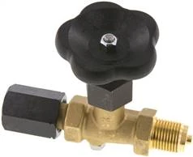
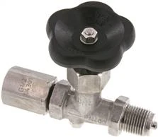
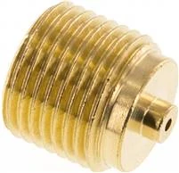
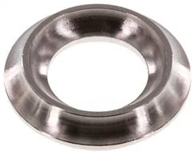
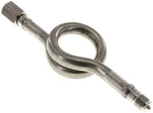

Gauge shut-off valve
WIKA MAV
van đồng hồ áp suất WIKAgauge valve
Cô lập đồng hồ khi bảo trì, thay thế, kiểm tra
Chi tiết →Hỗ trợ chọn và báo giá phụ kiện WIKA cho cụm đo áp suất: van chặn, adapter ren, gioăng làm kín, siphon chống nhiệt, thermowell và phụ kiện lắp đặt theo G1/4, G1/2, inox, brass.
Khách thường tìm: van đồng hồ áp suất WIKA, siphon WIKA cho hơi nóng, adapter đồng hồ áp suất G1/4 G1/2, gioăng đồng hồ áp suất WIKA, phụ kiện WIKA, nhà cung cấp WIKA tại Việt Nam.
Một số mã thông dụng nhất — bấm Chi tiết để xem đầy đủ thông số, ảnh và gửi báo giá. Xem toàn bộ mã theo nhóm ở phần bên dưới.

Cô lập đồng hồ khi bảo trì, thay thế, kiểm tra
Chi tiết →

Chuyển ren khi thay mã đồng hồ khác chuẩn kết nối
Chi tiết →
Làm kín kết nối ren, tránh rò rỉ môi chất
Chi tiết →
Bảo vệ đồng hồ khi đo hơi nóng, môi chất nhiệt cao
Chi tiết →Bấm vào từng mã để xem thông số, ảnh và gửi RFQ. Các mã được gom theo nhóm sản phẩm để dễ đối chiếu dải đo và kích thước.
41 mã · nhóm RNMANO1814MS
19 mã · nhóm MAH14MMMS
16 mã · nhóm TR63BUNDES
15 mã · nhóm MAV14SMSMES
11 mã · nhóm DR18MANOCU
10 mã · nhóm DR14MANOFCU
10 mã · nhóm TR6312SIES
9 mã · nhóm WSRK1212ES
9 mã · nhóm WSRU1212ES
9 mã · nhóm TR6312ES
7 mã · nhóm MAV14SMMMS
6 mã · nhóm MGH2660ES
5 mã · nhóm MANOS14MS
4 mã · nhóm MANOF14ES
3 mã · nhóm MZS1212MS
2 mã · nhóm MFREBUGEL63
1 mã · nhóm MSK-10610021CR
Van chặn giúp cô lập đồng hồ khi bảo trì, thay thế hoặc kiểm tra mà không cần dừng toàn bộ hệ thống. Đây là phụ kiện nên gợi ý kèm đồng hồ áp suất.
Siphon/ống xi phông dùng khi đo hơi nóng hoặc môi chất nhiệt cao, giúp giảm nhiệt tác động trực tiếp lên đồng hồ áp suất.
Rất quan trọng khi thay mã cũ bằng mã mới có ren khác chuẩn. Nên xác nhận G1/4, G1/2, NPT và vật liệu trước khi đặt hàng.